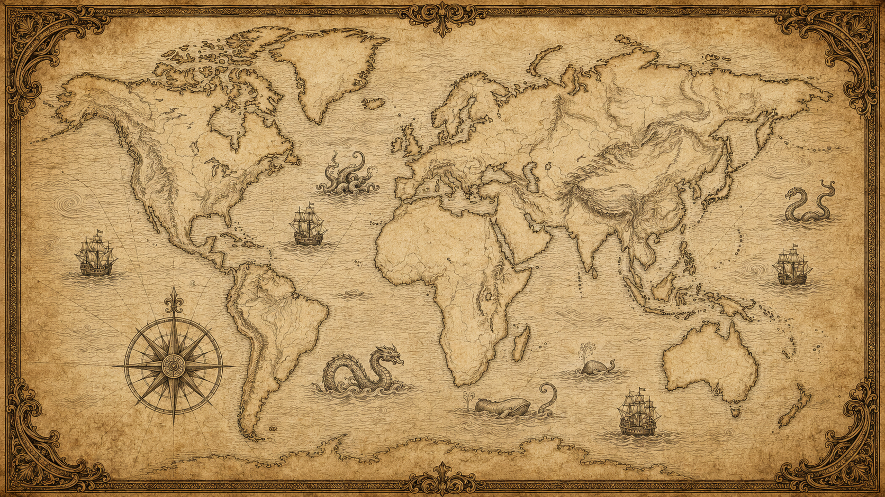

☰
← Accueil
🗺 Carte du Monde
Mythologies
Nordique
Grecque
Égyptienne
Romaine
Celtique
Mésopotamienne
Hindoue
Japonaise
Aztèque & Maya
Slave
Cultures
Chine
Égypte Antique
Créatures
Bête du Gévaudan
Monstre du Loch Ness
Mystères
Triangle des Bermudes
Stonehenge
☰ Menu
Carte du Monde
Mythologies, Cultures, Créatures & Mystères
Accueil
Molette : zoom · Glisser : déplacer · Clique sur un point
Mythologies
Cultures
Créatures
Mystères
Mode calibrage

↺ Réinitialiser la vue
+
−